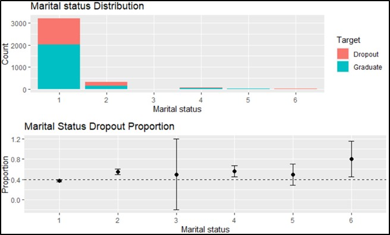
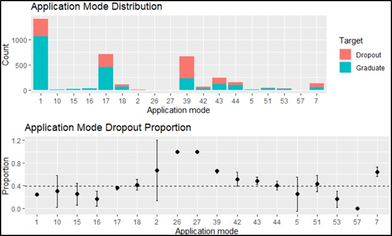
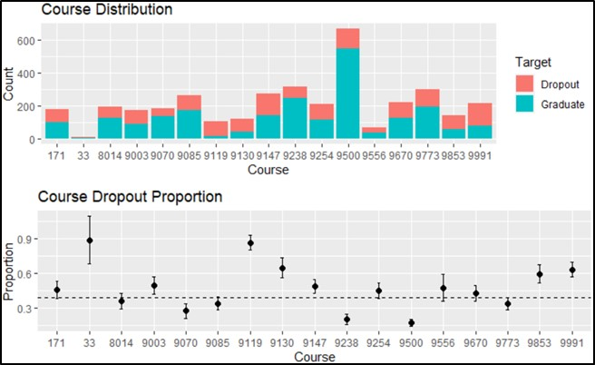
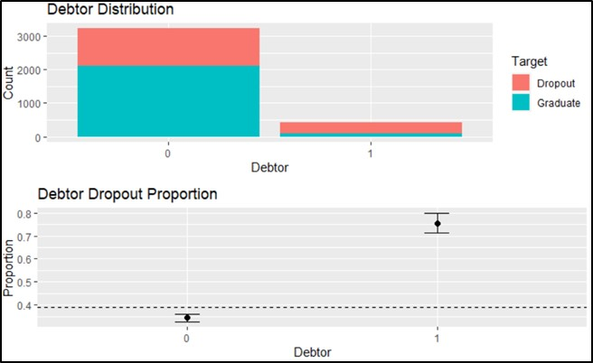
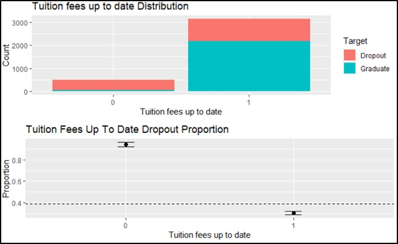
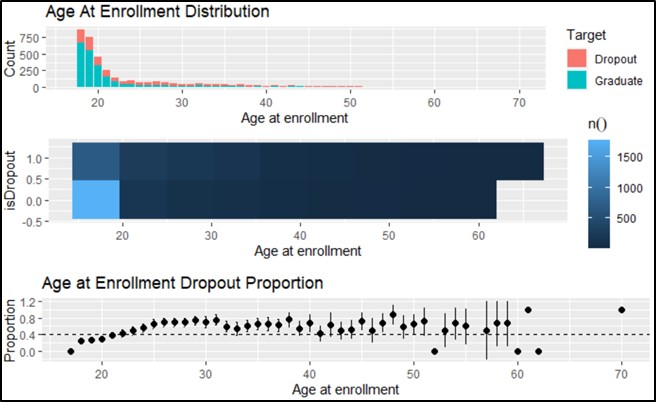
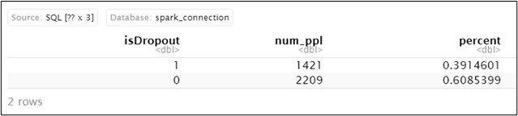
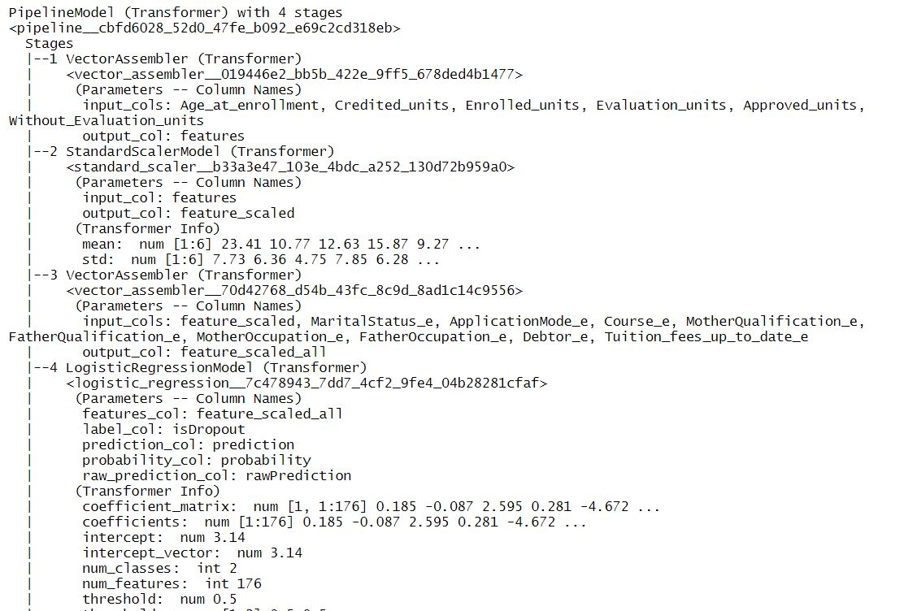

R code and dataset is available at this github page
Group members are
Our project could be viewed in several parts
The dataset was donated by a group of researchers from Portugal who were studying dropout rates and academic performance among undergraduate students from a higher education institution. The dataset includes a wide range of variables like the course enrolled, the student demographics, and other social-economic factors. We wanted to find a model that can perform a decent job at estimating the likelihood that a student will drop out. As such, the model can provide the school a better idea of which students of theirs are more prone to dropout. With the information at hand, the school may carry out early intervention and support for vulnerable students in order to curb dropout rates.
The data is based on a higher education institution in Portugal and obtained through SATDAP – Support System for the Digital Transformation of Public Administration (SAMA2020). The data has been preprocessed to handle data from anomalies, unexplainable outliers and missing values, resulting in 4424 instances. The data also contains 37 variables. The variables include 18 continuous/discrete variables and 19 categorical variables.
The parquet file was first loaded into RStudio using spark_read_parquet(). The data came in extremely messy without the numbers neatly divided into columns
We used filter() to filter out the “Enrolled” observations from the target variable as it is undetermined whether these students will drop out or not. After which, we used mutate() and as.numeric() to create a new column (isDropout) where 1 is assigned to those who dropped out and 0 to those who graduated.
Category 6 (Legally Separated) seems to be of significance as it has a high proportion of dropout of 0.8. Although a large percentage of observations fall under the “Single” category which has a 0.37 proportion of dropouts, it could still be a significant feature.
Application modes 7 (Holders of other higher courses) and 39 (Over 23 years old) seem to be of significance with dropout proportions of 0.64 and 0.66 respectively.
Courses 33, 9119, 9130, 9853 and 9991 have dropout proportions of 0.6 and above. As such, we have also identified it to be a significant feature
A debtor seems to be of significance as it has a high dropout proportion of 0.76 with 413 counts of observations.
Tuition fees not up to date seems to be of significance as it has a high dropout proportion of 0.94 with 486 counts of observations
There seems to be a positive relationship between the dropout proportions and age at enrollment
The table]shows 60% of data have a dropout 0 and 40% of the data has a dropout 1. Even though the data set is not evenly split between two classes, a 60-40 split is still considered good enough for our model to do the classification task.
we have to convert our variables to a numeric form for the ml_logistic_regression() to process. However, since we have multiple levels in some categorical variables, for example Course, we used ft_string_indexer() to first index the string column to an ML column of label indices, ordered by label frequencies. Afterwards, we used ft_one_hot_encoder() to map the column of label indices to a column of binary vectors for each categorical variable.
we made use of a pipeline which contains ft_vector_assembler() and ft_standard_scaler() to scale them. Subsequently, we would combine standardised variables with categorical variables using vector assembler again, which are passed into ml_logistic_regression() to regress isDropout against all independent variables.
Before modelling, we split the data into a training and testing set using a 8:2 ratio with seed = 888. Then, we fitted the pipeline onto the training set and used it to transform and get predictions on the testing set. The measure that we used to compare models will be the “area under the ROC curve”
We first plugged all the variables into a logistic regression and we will use this model as a benchmark model for comparison. The benchmark model has an area under the ROC curve of 0.9295625.
To find the best hyperparameter value, α and lambda, for the elastic net regularisation, we made use of ml_cross_validator() to perform 10 folds CV and tested a range of values elastic_net_param = c(0.25,0.4,0.5,0.6,0.75,0.8,0.85), and reg_param = c(seq(0.001,0.01,by = 0.001)) on the training set. We then evaluate and select the best combination of hyperparameter values with the highest ROC. From our results, the best combination is elastic_net_param = 0.6, with reg_param = 0.004. The area under ROC for this selected elastic net regularised logistic regression model is 0.9441253 when used to predict on the testing data.
Further data wrangling in this model by summation various curricular units from two semesters together. Cross-validation and elastic net regularization is also used in this model, to tune the best parameters. The model has an area under ROC of 0.9494767 in testing data
By comparing these three models, we think the last model is the best model with highest ROC value